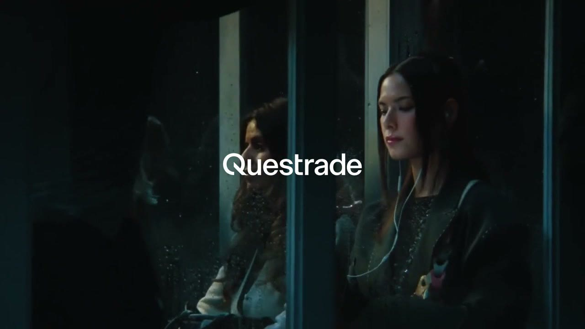

I’m a motion designer working across brand and digital. I like good ideas, trying things out and getting a little too invested in the details.

Questrade↗Michaela Day
Motion Designer, Paris
I’m a motion designer working across brand and digital. I like good ideas, trying things out and getting a little too invested in the details.

Questrade↗